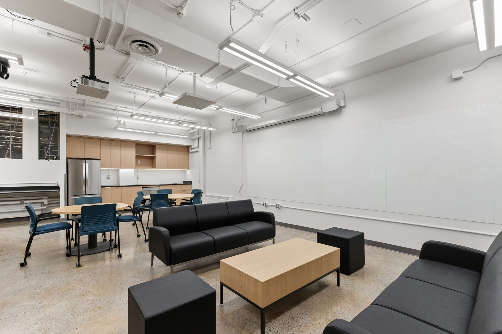
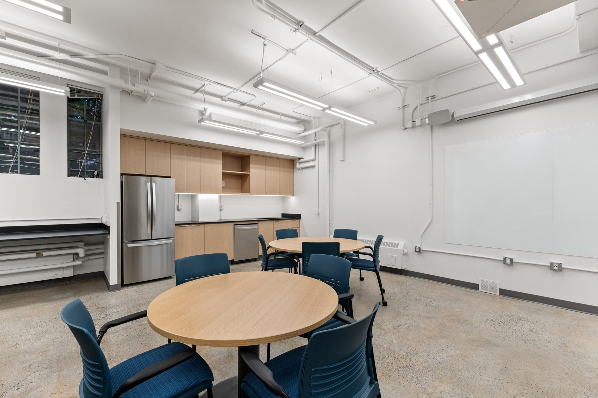
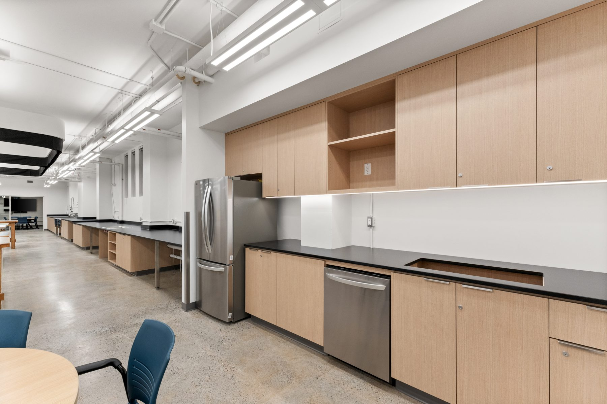

Convert a research lab to a teaching-grade environment without touching the adjacent active labs. Phased delivery, isolation, after-hours work.
14 weeks. 3 phases. Heavy demo after-hours. Daily standup with the building manager. Negative-pressure isolation walls on every active boundary.
Opened on the booked date. Zero workdays lost in the adjacent active labs. One inspection, deficiency walk pre-invoice.